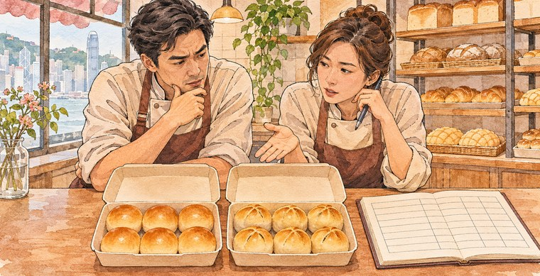

賣多了，為甚麼收入反而少了？

同一個差額，可能由相反影響抵銷而成
收入差額可能同時包含售價、總銷量及各產品比例的變動，彼此可互相抵銷。麵包店及數字均屬虛構。本案核對已完成銷售，不是需求實驗、利潤預測或新訂價決策。
課堂決策
香港虛構「海灣麵包店」售賣兩款可比較的六個裝麵包：原味和有餡。每包算一個銷售單位；產品規格及包裝大小不變。店主評核銷售團隊前，財務主管須先解釋本月收入缺口。
店主想說：「收入低於預算，因為團隊賣得太少。」財務主管則建議把價格影響與銷量連同組合的影響分開。判斷初步記錄能支持哪個說法。金額均為港元銷售淨收入，不計退貨、銷售稅、匯率或其他收入。
增加收入用正數，減少用負數。先維持各產品預算售價，把預算件數改成實際件數；再按實際件數，把預算售價改成實際售價。前者稱銷量影響，後者稱售價影響；兩項應加總至實際收入減預算收入。
預算售出 600 包原味，每包 HK$10；400 包有餡，每包 HK$20。實際總銷量為 1,200 包，收入 HK$13,200。財務主管已核對：各產品實際件數按各自預算售價計算，小計 HK$15,600。第二輪才公布各產品實際記錄。
| 計算基礎 | 收入 |
|---|---|
| 預算件數及售價 | 14,000 |
| 實際件數、預算售價 | 15,600 |
| 實際件數及售價 | 13,200 |
按題設做法，計算總收入差額、銷量影響及售價影響。收入不足是否足以證明包數太少、全因單價，或有人表現不佳？
第二輪：補充資料
完整記錄顯示原味 840 包，每包 HK$8；有餡 360 包，每包 HK$18。這就是先前的 1,200 包、HK$13,200，不是額外銷售。實際包數中原味佔 70%，預算佔 60%。沒有記錄證明顧客為何選擇這個組合。
現把銷量影響再分開。先維持預算件數比例（原味 60%、有餡 40%），將預算件數調整至實際總銷量，再以預算售價計算這個假設組合。它與預算收入之差是總銷量影響；按實際件數及預算售價的收入減去這個假設小計，就是組合影響。
所有銷售均妥為批准並完成交付。題設未提供成本、利潤率、競爭對手動向、促銷、供應量或顧客轉買證據。店主可先要求共同檢視商業情況，再評估表現。原預算或單一有利的收入差異，都不能證明某產品、員工或價格政策成功。
算出假設組合的件數及收入，把總銷量、組合與售價三種影響對回不變的 HK$800 缺口。為何再加銷量影響會重複計算？你會怎樣向店主簡報，並索取甚麼證據？
解題：先分兩種影響
預算收入 = 600 × 10 + 400 × 20 = HK$14,000。實際減預算 = HK$13,200 − HK$14,000 = −HK$800。初步銷量影響 = HK$15,600 − HK$14,000 = +HK$1,600；售價影響 = HK$13,200 − HK$15,600 = −HK$2,400。
核對：HK$14,000 + HK$1,600 − HK$2,400 = HK$13,200。總包數比預算多 200；但 +HK$1,600 包含總包數和產品組合兩種變動，並非只量度多賣 200 包的影響。
解題：先固定預算組合
以 1,200 包和 60:40 預算件數比例計，假設售出原味 720 包、有餡 480 包。用預算售價計得 720 × HK$10 + 480 × HK$20 = HK$16,800。這只是比較基準，不是額外、缺漏或已承諾的銷售。
總銷量影響 = HK$16,800 − HK$14,000 = +HK$2,800。另一算法：預算平均售價 = 60% × HK$10 + 40% × HK$20 = HK$14；以固定組合多賣 200 包，就是 200 × HK$14 = HK$2,800。
解題：改用實際組合
實際件數按預算售價計為 840 × HK$10 + 360 × HK$20 = HK$15,600。較假設組合多 120 包原味，增加 HK$1,200；少 120 包有餡，減少 HK$2,400。組合的淨影響為 −HK$1,200。
總銷量加組合等於原先的銷量影響：+HK$2,800 − HK$1,200 = +HK$1,600。組合影響反映預算售價較低的產品佔比上升，不能證明顧客被迫轉買或有餡麵包缺貨。
解題：按實際包數計售價影響
原味售價影響 = 840 × (HK$8 − HK$10) = −HK$1,680；有餡 = 360 × (HK$18 − HK$20) = −HK$720，合計 −HK$2,400。這一步用實際件數；用預算件數會漏算價格對件數差異的影響。
最終核對：HK$14,000 + HK$2,800 − HK$1,200 − HK$2,400 = HK$13,200。三項合計 −HK$800。不可再加 +HK$1,600，因這已是總銷量與組合的合計。
解題：解讀平均售價
每包整體實現售價從預算平均 HK$14 降為 HK$13,200/1,200 = HK$11。HK$3 的差額不全是減價。按實際組合計，預算售價平均 HK$13，其中 HK$1 來自組合轉變，HK$2 來自各款本身的價格下降。
這裏已明訂拆解次序。其他一致的拆法可有不同的交互影響分配，但總差額相同。不要混用不同方法的分項。本例按售價計收入影響，不按邊際貢獻或利潤率計貢獻或利潤影響。
解題：陳述結果，不歸咎個人
可向店主說：「包數增加了，但售價較低的產品佔比上升，各款實際售價也下降。兩者合計抵銷了總銷量的正面影響，收入較預算少 HK$800。」有利或不利是指收入比較，並非員工表現評價。
索取訂價審批、促銷條款、供應情況、顧客需求和預算依據，另查產品成本及利潤率。低售價可能有助其他目標，高售價產品也未必較賺錢。不能單憑計算作因果或利潤判斷。
教學提示
用 4 分鐘做初步兩段差異，5 分鐘算預算組合的假設銷售，再用 5 分鐘核對並練習向管理層陳述。請同學分清總銷量影響與整體銷量小計；顯示三個比較組合，不把每項有利或不利差異當作獨立商業事件。
第二輪
完整記錄顯示原味 840 包，每包 HK$8；有餡 360 包，每包 HK$18。這就是先前的 1,200 包、HK$13,200，不是額外銷售。實際包數中原味佔 70%，預算佔 60%。沒有記錄證明顧客為何選擇這個組合。
現把銷量影響再分開。先維持預算件數比例（原味 60%、有餡 40%），將預算件數調整至實際總銷量，再以預算售價計算這個假設組合。它與預算收入之差是總銷量影響；按實際件數及預算售價的收入減去這個假設小計，就是組合影響。
所有銷售均妥為批准並完成交付。題設未提供成本、利潤率、競爭對手動向、促銷、供應量或顧客轉買證據。店主可先要求共同檢視商業情況，再評估表現。原預算或單一有利的收入差異，都不能證明某產品、員工或價格政策成功。
算出假設組合的件數及收入，把總銷量、組合與售價三種影響對回不變的 HK$800 缺口。為何再加銷量影響會重複計算？你會怎樣向店主簡報，並索取甚麼證據？